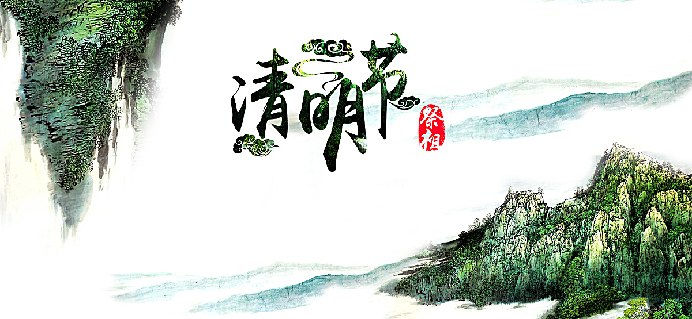
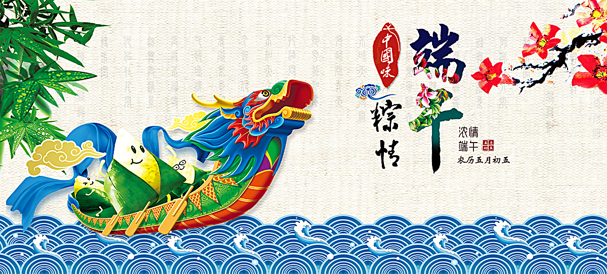

清明节

清明节又叫踏青节，在仲春与暮春之交，也就是冬至后的第108天。是中国传统节日，也是最重要的祭祀节日之一，是祭祖和扫墓的日子。中华民族传统的清明节大约始于周代，距今已有二千五百多年的历史。
清明最早只是一种节气的名称，其变成纪念祖先的节日与寒食节有关。晋文公把寒食节的后一天定为清明节。在山西大部分地区是在清明节前一天过寒食节；榆社县等地是在清明节前两天过寒食节；垣曲县还讲究清明节前一天为寒食节，前二天为小寒食。
清明节是中国重要的“时年八节”之一，一般是在公历4月5号前后，节期很长，有10日前8日后及10日前10日后两种说法，这近20天内均属清明节。清明节原是指春分后十五天，1935年中华民国政府明定4月5日为国定假日清明节，也叫做民族扫墓节。
《历书》：“春分后十五日，斗指丁，为清明，时万物皆洁齐而清明，盖时当气清景明，万物皆显，因此得名。”清明一到，气温升高，正是春耕的大好时节，故有“清明前后，种瓜点豆”之说。
端午节

端午节，为每年农历五月初五。据《荆楚岁时记》记载，因仲夏登高，顺阳在上，五月是仲夏，它的第一个午日正是登高顺阳好天气之日，故五月初五亦称为“端阳节”。此外端午节还称“午日节、五月节、龙舟节、浴兰节、诗人节”等。端午节是流行于中国以及汉字文化圈诸国的传统文化节日。
端午节起源于中国，有吴越地区（长江中下游及以南一带）崇拜龙图腾的部族举行图腾祭祀的节日，在农历五月初五以龙舟竞渡形式举行部落图腾祭祀的习俗之说。战国时期的楚国（今湖北）诗人屈原在该日抱石跳汨罗江自尽，统治者为树立忠君爱国标签将端午作为纪念屈原的节日；部分地区也有纪念伍子胥、曹娥等说法。
端午节与春节、清明节、中秋节并称为中国民间的四大传统节日。自古以来端午节便有划龙舟及食粽等节日活动。自2008年起，端午节被列为国家法定节假日。2006年5月，国务院将其列入首批国家级非物质文化遗产名录；2009年9月，联合国教科文组织正式审议并批准中国端午节列入世界非物质文化遗产，成为中国首个入选世界非遗的节日。
中秋节
中秋节，又称月夕、秋节、仲秋节、八月节、八月会、追月节、玩月节、拜月节、女儿节或团圆节，是流行于中国众多民族与汉字文化圈诸国的传统文化节日，时在农历八月十五；因其恰值三秋之半，故名，也有些地方将中秋节定在八月十六。
中秋节始于唐朝初年，盛行于宋朝，至明清时，已成为与春节齐名的中国传统节日之一。受中华文化的影响，中秋节也是东亚和东南亚一些国家尤其是当地的华人华侨的传统节日。自2008年起中秋节被列为国家法定节假日。2006年5月20日，国务院列入首批国家级非物质文化遗产名录。
中秋节自古便有祭月、赏月、拜月、吃月饼、赏桂花、饮桂花酒等习俗，流传至今，经久不息。中秋节以月之圆兆人之团圆，为寄托思念故乡，思念亲人之情，祈盼丰收、幸福，成为丰富多彩、弥足珍贵的文化遗产。中秋节与端午节、春节、清明节并称为中国四大传统节日。